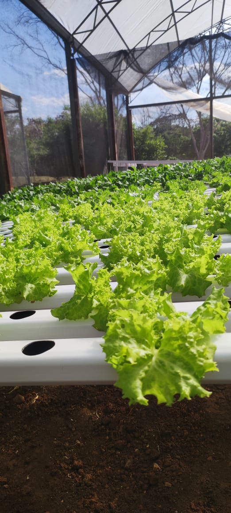
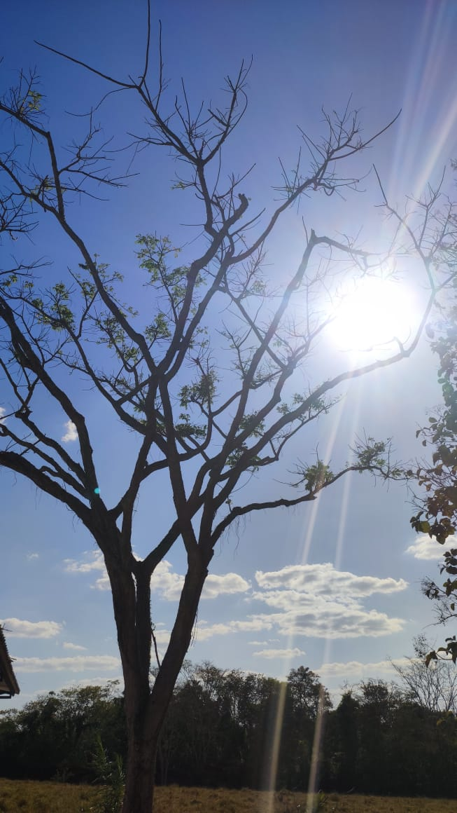
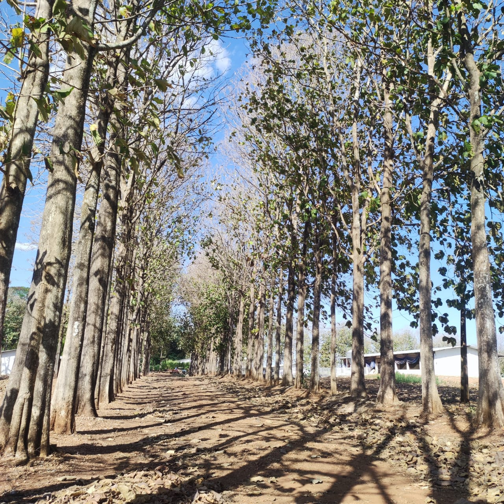
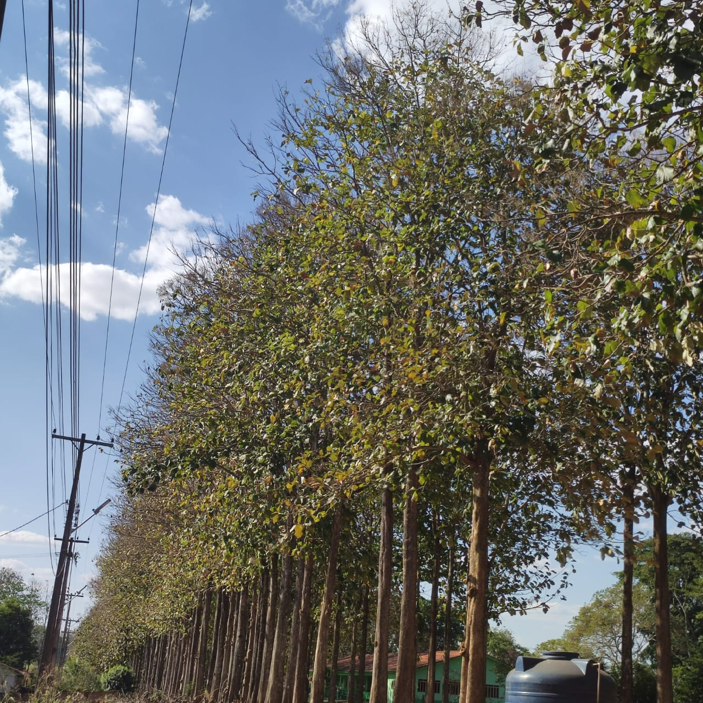
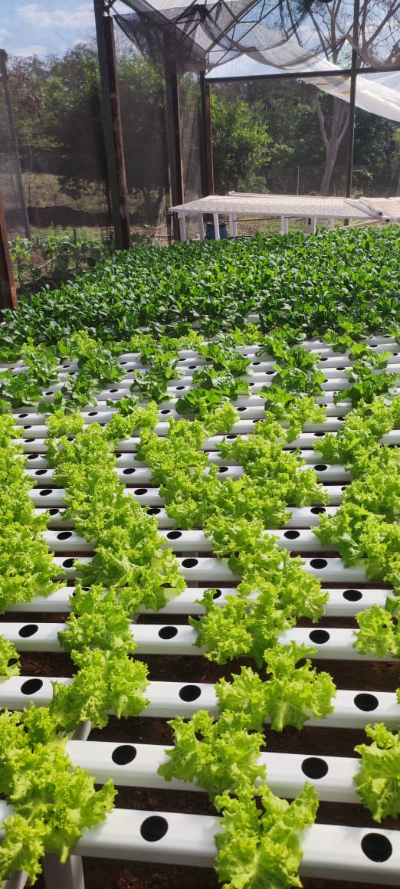
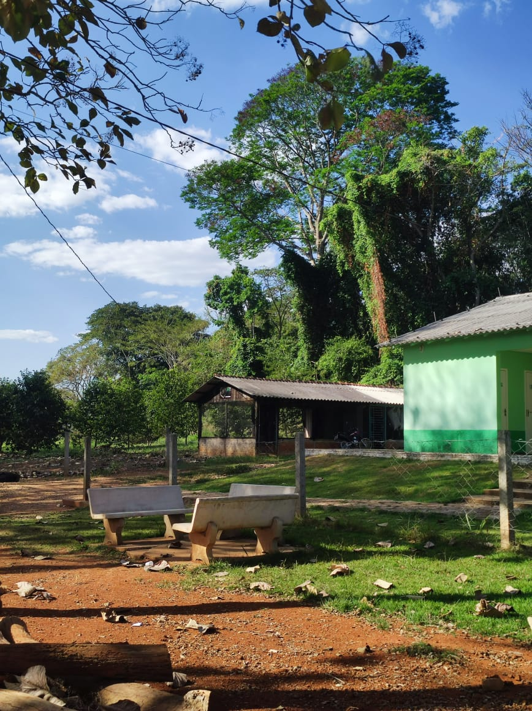
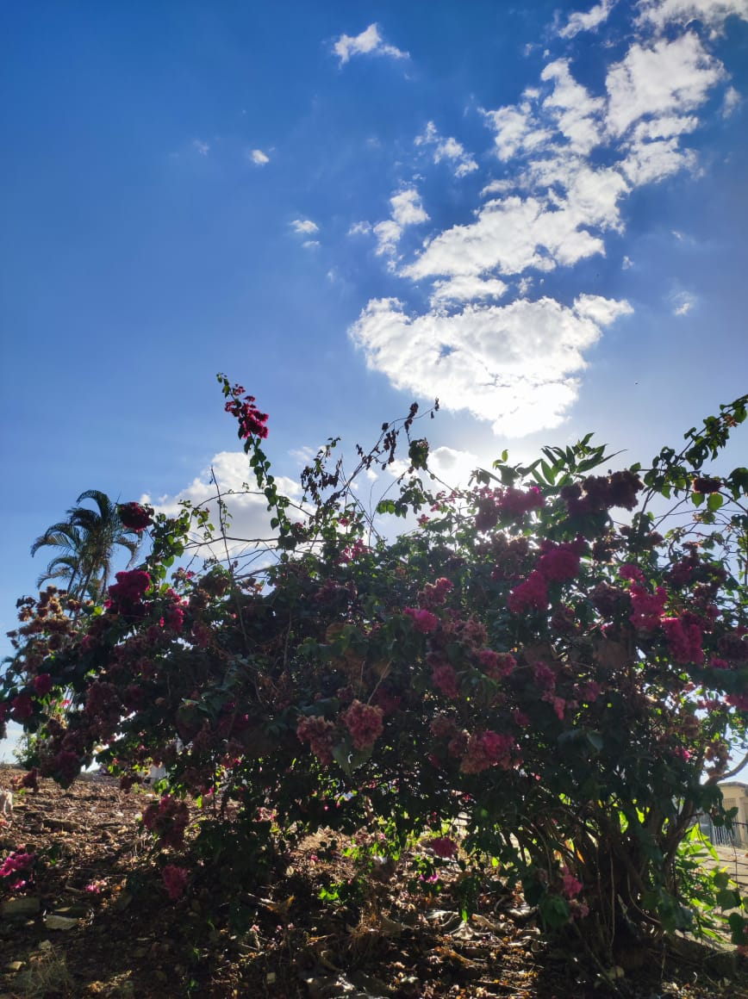
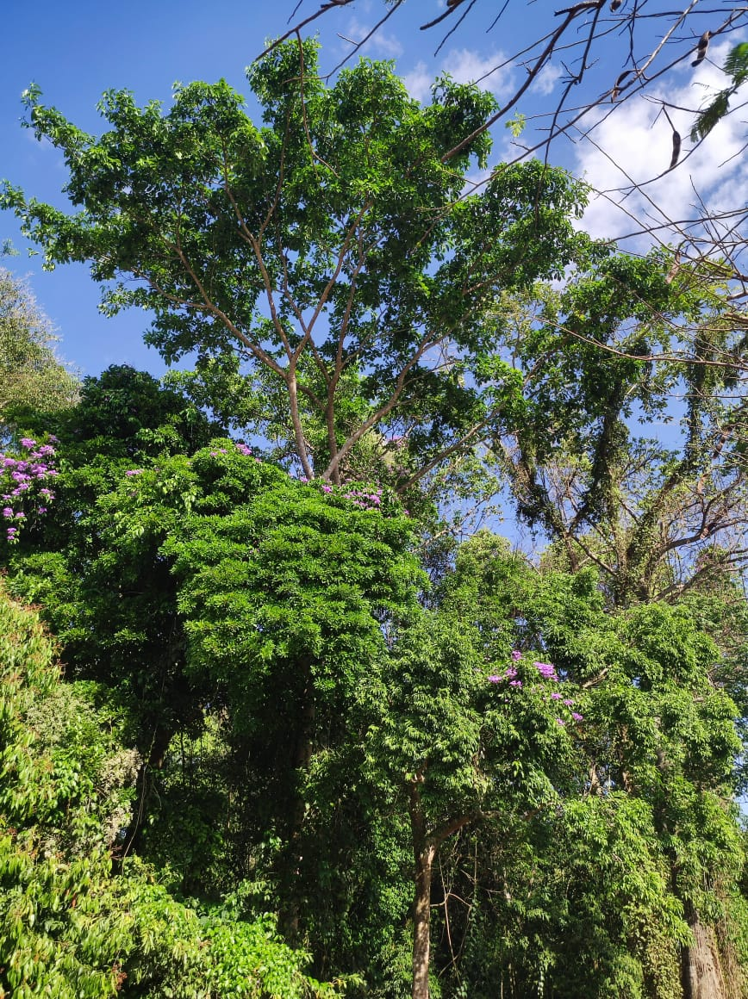

Relatório de Visita Técnica a Outro Instituto Federal
Data: 28 de Agosto de 2023 Local: Instituto Federal de Vilhena-RO
No dia 28 de Agosto de 2023, como representante do Instituto Federal de Vilhena, tive a oportunidade de visitar o Instituto Federal de Colorado do Oeste. O objetivo desta visita foi trocar conhecimentos, experiências e conhecer as práticas acadêmicas e tecnológicas adotadas por outra instituição federal de ensino. A visita proporcionou uma oportunidade valiosa para aprofundar a colaboração interinstitucional e buscar inspiração para aprimorar nossas próprias atividades.
Durante a visita, participei de diversas atividades e encontros que forneceram insights sobre a estrutura e funcionamento do Instituto Federal de Colorado do Oeste. Algumas das atividades incluíram:
Reunião com a Administração: Encontrei-me com membros da administração do instituto anfitrião para discutir estratégias de ensino, pesquisa e extensão, bem como políticas de captação de recursos e parcerias externas. Trocamos ideias sobre as melhores práticas para otimizar a gestão e recursos institucionais.
Tour pelas Instalações: Fui guiado por representantes do instituto pelos laboratórios, bibliotecas, salas de aula e espaços de convivência. Conhecer a infraestrutura disponível ajudou a compreender como o ambiente físico pode influenciar na qualidade da aprendizagem dos estudantes.
Observação de Aulas: Tive a oportunidade de assistir a algumas aulas de diferentes cursos. Isso permitiu comparar metodologias de ensino, abordagens pedagógicas e tecnologias educacionais utilizadas pelo Instituto de Colorado do Oeste.
Apresentações de Projetos de Pesquisa Camara escura: Membros do corpo docente apresentaram projeto da camara escura, destacando suas e as contribuições para o desenvolvimento regional. Essa troca de informações inspirou ideias para futuras parcerias em pesquisa.
Metodologias Ativas: O Instituto Federal de Colorado do Oeste adota fortemente abordagens de ensino baseadas em metodologias ativas, envolvendo os estudantes de maneira prática e participativa em seu aprendizado.
Integração com a Indústria: A colaboração estreita com a indústria local foi evidente em vários projetos de pesquisa e programas de estágio, proporcionando aos estudantes experiências relevantes para o mercado de trabalho.
Inovação Tecnológica: A instituição tem uma abordagem proativa em relação à incorporação de tecnologias educacionais inovadoras, como plataformas online interativas e laboratórios equipados com equipamentos de última geração.
A visita ao Instituto Federal de [Nome da Outra Cidade] foi uma experiência enriquecedora que proporcionou uma visão aprofundada das práticas acadêmicas e tecnológicas de outra instituição federal de ensino. Os aprendizados obtidos servirão como inspiração para o aprimoramento contínuo das atividades do Instituto Federal de [Nome da Sua Cidade]. Agradeço a calorosa recepção e o compartilhamento de conhecimento por parte dos colegas do instituto anfitrião.
Assinatura: Raylon Nogueira Aluno de Informatica 3ºB Informatica Instituto Federal de Vilhena-RO Data: 16 de Agosto de 2023